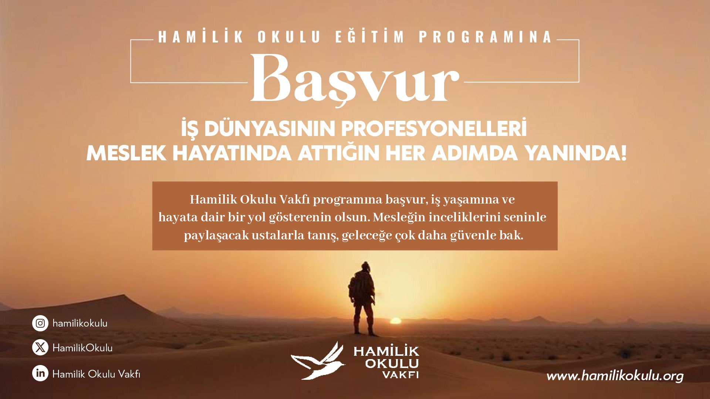

Fark Et
Kişisel yönelim ve program zemini berraklaşır.
Hamilik Okulu Kırşehir Programı; seminer, atölye, gezi, kitap tahlili ve rehberlik süreçleriyle tasarlanmış, deneyim temelli bir gelişim modelidir.
Öğrencilerin kendini tanıma, mesleki bilinç, manevi derinlik, tarihsel farkındalık, dijital bilinç ve iletişim alanlarında gelişimini desteklemek.
Seminer, atölye, uygulama, saha gezisi, kitap tahlili ve rehberlik modelini bir araya getiren çok katmanlı bir yaklaşım.
Bilgi aktarımından çok deneyim, gözlem, içsel farkındalık ve değer temelli duruş geliştirmeye odaklanır.
Hazırlık, 1. ve 2. sınıf üniversite öğrencileri; üniversite hayatının başındaki gençler.
Her başlık öğrenciyi önce fark etmeye, sonra deneyimlemeye ve sonunda kendi mesleki duruşuna taşımaya göre kurgulanır.
Kişisel yönelim ve program zemini berraklaşır.
Seminer, atölye ve saha pratikleri birbirine bağlanır.
Kazanımlar meslek, iletişim ve sorumluluk alanına taşınır.
Birlik Meydanı çalışma raporundaki iki yıllık gelişim kapsamı; Kırşehir ilk uygulaması için 1,5 yıllık, ölçülebilir ve sahaya taşınabilir bir programa uyarlandı. Sayfada ayrı bir rapor alanı yok; içerik doğrudan modül, yöntem, saha deneyimi ve etki kurgusuna dönüştürüldü.

Ahilik ve fütüvvet mirası; mesleği sadece teknik beceri değil, kimlik, emanet, toplumsal fayda ve sorumluluk alanı olarak ele alan bir çerçeveye dönüştürülür.
Seminer, atölye, doğa/kültür gezisi, kitap tahlili, rehberlik ve yansıtma çalışmaları tek bir gelişim ritmine bağlanır.
Öğrenci önce kendini ve mesleğini fark eder; ardından deneyim, gözlem ve geri bildirimle duruşunu görünür hale getirir.
Dinleme, sunum, araştırma ve analiz çalışmalarıyla düşünceyi açık, sağlam ve değer merkezli ifade etme becerisi güçlendirilir.
Dönemlere tıklayarak her bölümde işlenen modülleri görebilirsiniz.
İçerik tek seferlik bir etkinlik gibi değil; dönemlere yayılan, ölçülen ve geliştirilen bir yolculuk gibi çalışır.
Başvuru, tanışma, beklenti okuması ve grup uyumu tamamlanır.
Ahilik, mesleki bilinç, anlam arayışı ve rehberlik omurgası kurulur.
İstanbul gezisi ve saha temaslarıyla öğrenme sınıf dışına taşınır.
Tarih, estetik, dijital bilinç, değerler ve mezuniyet sonrası takip tamamlanır.
Temel içerikler standartlaştırılmış bir çerçevede hazırlanır.
Üniversite ve öğrenci grubunun ihtiyacına göre içerik esnetilebilir.
Her grup, süreci bir rehber eşliğinde deneyimler.
Program her yıl gözlem ve geri bildirimlere göre güncellenir.
Dönemsel DeğerlendirmeGiriş, ara ve son dönem değerlendirmeleri.
Yansıtma KâğıtlarıHer oturum sonunda kişisel yansıtma notları.
Rehber Gözlem FormlarıRehberin grup ve birey gözlemleri.
Etki TakibiMezuniyet sonrası 3 aylık etki takipleri.
İyileştirmeGeri bildirim odaklı sürekli program iyileştirmesi.
Program Detayı sayfasında kullanılan görseller, kurumların resmi web varlıklarından alınarak yerel varlıklara dönüştürüldü.


Programın yapısını incelediysen, sıradaki adım kısa bir katılım formu doldurmak.
Katılım Formuna Git →